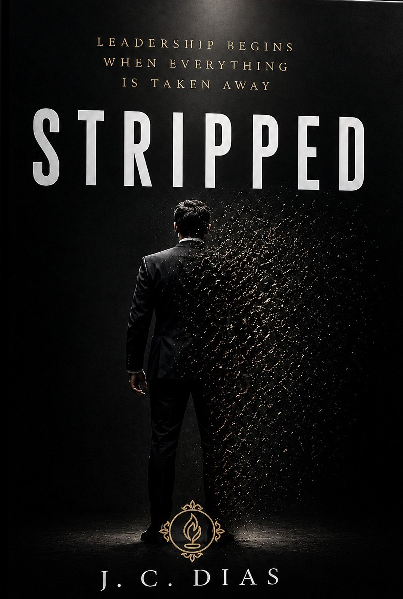
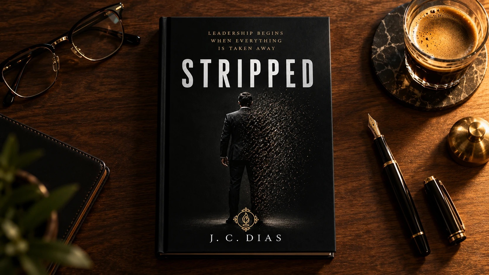

Isto não é teoria de sala de aula. É o que eu vivi, nos dois lados: no topo e no chão.
O livro · STRIPPED
Escrito de dentro de uma cela, STRIPPED responde à pergunta que a carreira ensina você a evitar: quem é você quando ninguém é obrigado a te ouvir?
Lançamento em breve. Em primeira mão por aqui.
"STRIPPED não é uma leitura confortável. É uma leitura que faz falta."
Empresária e CEO
Belo Horizonte, MG

"Não terminei pensando em como ser um executivo melhor. Terminei pensando em como ser um líder melhor."
Diretor Executivo
São Paulo, SP
A transformação
O problema
Faz a conta honesta: se amanhã tirassem o seu título, quantos dos que hoje te obedecem ainda te procurariam pra pedir um conselho?
Essa pergunta separa o chefe do líder, e quase ninguém tem coragem de se fazer. Autoridade é o poder de obrigar, emprestado pelo cargo. Influência é quando a pessoa faz porque confia em você. Uma some no dia em que o crachá sai. A outra te segue pra onde você for.
Eu aprendi isso do pior jeito: perdendo tudo de uma vez. O cargo, o nome, o respeito que vinha de graça com a posição. E foi exatamente ali, sem nada, que eu descobri o que é liderar de verdade. STRIPPED é o caminho inteiro, do fundo de volta à liderança que importa.
Isto não é teoria de sala de aula. É o que eu vivi, nos dois lados: no topo e no chão.
O que você vai aprender
Como parar de liderar pela autoridade do cargo e começar a liderar pela influência que ninguém te tira.
Por que quem mais fala costuma ser menos ouvido, e como o silêncio e a consistência constroem respeito.
Como manter a firmeza quando a sala perde o controle, sem absorver nem espalhar a tensão.
A hora de agir e a hora de segurar o espaço: por que nem todo momento é seu pra resolver.
Como dizer a verdade difícil com cuidado, em vez de "administrar" a conversa pra fugir do desconforto.
O ritual diário que decide quem comanda você antes de o dia começar.
Como construir uma liderança que não depende de você estar na sala, e o que você deixa nas pessoas.
A pergunta que revela quem você é de verdade: quem é você quando ninguém é obrigado a te ouvir?
Por dentro do livro
STRIPPED é uma jornada em três movimentos: despir, reconstruir e liberar. Cada parte responde a uma pergunta que a carreira ensina você a evitar.
Quem é você quando ninguém é obrigado a te ouvir? Identidade, silêncio e a diferença entre autoridade e influência.
Por que você lidera? Propósito, coragem de falar a verdade e a influência que é sua, não emprestada do cargo.
O que você vai construir? Cultura, resiliência e o que você deixa nas pessoas quando sai da sala.

A liderança começa quando tiram tudo de você.
Antes de servir, despir
A mensagem dele é poderosa: liderar é servir. STRIPPED trata do passo que vem antes, e quase ninguém fala dele.
Pra servir de verdade, você primeiro precisa se despir. Do cargo. Da vaidade. Do ego. Do medo de perder a posição. Ninguém serve de coração enquanto ainda está agarrado ao que o título dá.
Despir vem primeiro. Servir vem depois.
Pra quem é
É pra você se
Você caiu e quer voltar inteiro, com uma liderança que não depende de crachá.
Você ainda não tem o título, mas quer gente andando junto, não só obedecendo.
Você sente que te obedecem, mas não sabe se te seguiriam sem o cargo.
Você quer liderar com caráter e fé, não com o poder da cadeira.
Não é pra você se
Pra você, liderar é só o cargo e o poder de mandar.
Você quer uma fórmula pronta sem olhar pra dentro.
Você não quer encarar quem você é sem o título.
Elogios ao livro
"Sempre acreditei que um bom líder precisava ter respostas rápidas e resolver todos os problemas. O capítulo sobre a intervenção me fez enxergar que, muitas vezes, eu não ajudava minha equipe a crescer porque precisava ser aquele que resolvia tudo. Uma leitura desconfortável, mas necessária."
Gerente Industrial
Curitiba, PR
"O que mais me marcou foi a reflexão sobre a cultura que deixamos nas pessoas. Ela é construída nas pequenas atitudes de cada dia, e o livro mostra isso de uma forma muito humana. Gostaria de ver essa leitura nas mãos de todos os gestores da empresa."
Diretor de Recursos Humanos
Porto Alegre, RS
"O livro me fez olhar para uma questão que eu sempre evitava: como me comporto quando ninguém está me observando? A parte sobre integridade e os pequenos atalhos do dia a dia foi especialmente forte. Recomendo pra quem já lidera e acha que não tem mais nada a aprender."
Gerente Comercial
Rio de Janeiro, RJ
"O autor transforma situações extremas em reflexões que se aplicam direto à rotina de quem lidera. O capítulo sobre o silêncio me fez perceber quantas vezes eu ocupava todo o espaço nas reuniões sem deixar minha equipe pensar. É um livro que pretendo reler."
Diretor de Operações
Joinville, SC
"Depois de um acidente gravíssimo, o primeiro pensamento do autor foi sobre uma reunião de trabalho. Quantas vezes fazemos o mesmo, colocando o trabalho acima de tudo? Esse livro me fez pensar na minha empresa, mas principalmente na minha esposa e nos meus filhos."
Empresário
Goiânia, GO
"A leitura me ajudou a perceber que autoridade não precisa ser demonstrada a cada reunião. Ela também é construída pela consistência, pela escuta e pelo respeito. Foi importante encontrar um livro que fala de liderança sem romantizar o poder."
Coordenadora de Equipes
Recife, PE
"O autor não tenta vender uma fórmula pronta. Ele apresenta as próprias contradições, erros e descobertas, e isso traz muita credibilidade. A discussão sobre construir uma equipe que não dependa o tempo inteiro do líder me fez repensar como estou estruturando minha empresa."
CEO e Fundador de Startup
Florianópolis, SC
"Depois de quase três décadas em posições de liderança, achei que já tinha uma compreensão sólida do assunto. STRIPPED me mostrou perguntas que eu nunca tinha feito a mim mesmo. Cargos acabam, empresas mudam e resultados são esquecidos. O impacto que deixamos nas pessoas permanece."
Presidente de Empresa
Campinas, SP
O livro
STRIPPED
A liderança que ninguém pode te tirar, em eBook.
à vista no Pix, ou em até 12x no cartão
Em breveLeu e sentiu que não era pra você? É só pedir, dentro de 7 dias, que a Hotmart devolve cada centavo. O risco é meu, não seu.
Dúvidas
Digital, um eBook. Você lê no celular, no tablet ou no computador, onde e quando quiser. Assim o acesso é na hora e o preço fica justo.
Na hora. Assim que o pagamento é aprovado, a Hotmart manda o acesso no seu e-mail.
Não. O livro serve tanto pra quem já lidera e quer voltar mais forte, quanto pra quem ainda não tem o título.
Dá pra ler em poucos dias, um capítulo por vez. Mas é um livro pra voltar sempre, porque cada capítulo termina com uma pergunta pra você aplicar na vida real.
Pode. R$67 à vista no Pix, ou em até 12x no cartão pela Hotmart.
É quem você é quando ninguém é obrigado a te ouvir. Comece a construir isso hoje, por R$67.